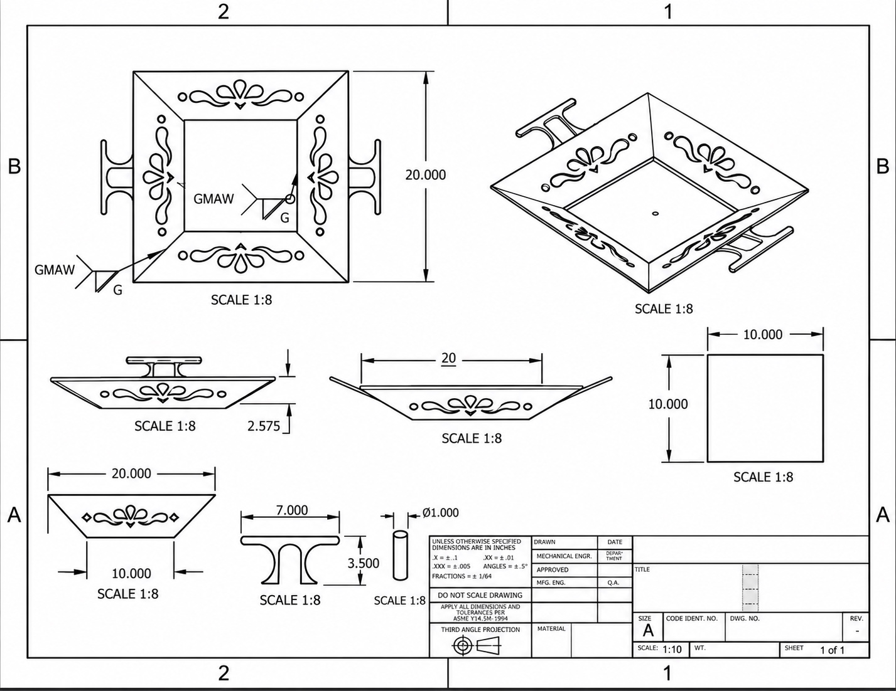
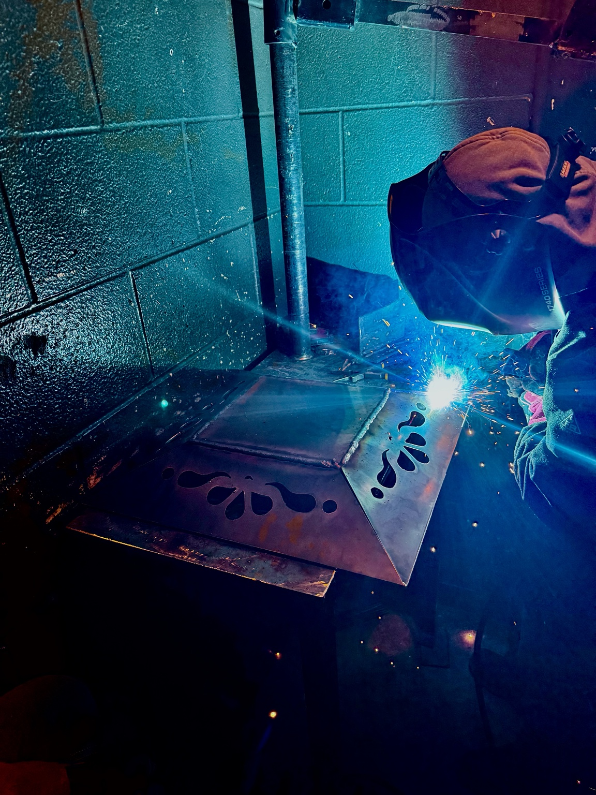

Project Overview
During the welding program at Maxwell High School, I developed a custom steel fire pit as an individual design-and-build project. The goal was to take a concept through the complete fabrication workflow: preparing a dimensioned drawing, planning the geometry of the steel panels, assembling the parts, and creating a finished product.
The fire pit features a square central base, four outward-sloping side panels, decorative laser-cut openings, and handles. Rather than relying solely on a physical mockup, I used digital design tools to communicate the shape, dimensions, and weld locations before fabrication.

01 / Engineering Design & Technical Documentation
I created the design using AutoCAD and Onshape. The technical drawing communicates the final geometry through top, front, side, and isometric views. It also includes dimensions and GMAW weld symbols to identify where welded connections were required.
The drawing specifies an approximately 20-inch overall width, a 10-inch square central base, and a shallow sloped profile. These dimensions guided layout and assembly, while the multiple views helped translate a three-dimensional concept into manufacturable parts.
Designing the sloped panels required thinking about how individual pieces would meet at the corners and connect to the central base. The decorative cutout pattern was laser-cut, allowing me to focus the fabrication work on positioning, joining, and finishing the steel components.

02 / Fabrication & Assembly
After the design stage, I moved into fabrication. The steel pieces needed to be positioned so the angled panels met cleanly at the corners and maintained the intended overall shape. I assembled the components and used Gas Metal Arc Welding (GMAW) to create the welded connections.
The laser-cut openings provided a decorative feature without requiring me to manually cut each pattern. The more demanding hands-on work was maintaining consistent alignment and weld quality while joining the angled steel surfaces.
As the assembly progressed, I checked how the panels met and adjusted their positioning to preserve the geometry established in the drawings.

03 / Challenges & Problem-Solving
One of the biggest challenges was keeping the steel panels aligned during assembly. Because the sides slope outward, small positioning differences at a joint could affect the overall fit and appearance.
Maintaining uniform welds was another major challenge. I had to pay attention to positioning and technique while working across multiple seams and changing joint orientations.
These challenges reinforced the importance of planning a weld sequence, checking fit-up throughout assembly, and balancing the appearance of the finished product with the need for reliable connections. They also demonstrated why accurate drawings are only the first part of fabrication: the physical build still requires careful judgment and adjustments.
04 / Finished Product & What I Learned
The final result was a completed steel fire pit with four patterned sides, visible welded joints, integrated handles, and a black finish. The completed piece closely follows the overall form and decorative layout documented in my drawing.
More importantly, this project gave me experience taking ownership of an entire engineering workflow—from CAD design and technical documentation through fabrication, assembly, and finishing. It strengthened my ability to interpret drawings, work with real-world fit-up constraints, and troubleshoot manufacturing challenges directly.
Technical Skills Demonstrated
- CAD and drafting: AutoCAD, Onshape, dimensioned multi-view drawings, and weld-symbol interpretation.
- Manufacturing: Steel component assembly, laser-cut component integration, and fabrication planning.
- Welding: GMAW, joint fit-up, panel alignment, and weld consistency.
- Project execution: Independent design-to-build ownership, troubleshooting, and finishing.